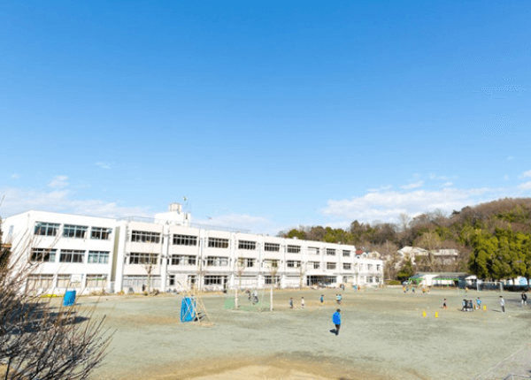

小学校の掃除当番での雑巾がけは色々なことを教えてくれました。
水の冷たさに感じる季節感
床や机がきれいになった時の清々しさ
身体と心を鍛えてくれたのも雑巾がけ。
床の雑巾がけでは足腰の筋力や体幹が否応なく鍛えられました。
決められた当番をやらされることの憂鬱さや、そしてちょっとさぼってしまった時の気まずさ、
集団行動やチームワークもここで知りました。
そう、雑巾がけは、周りと協力し助け合うこと、モノを大事に使うこと、等など、
実に色々なことを教えてくれました。
それは、まさに今求められているSDGｓ（持続可能な世界）を目指す精神と共通するものです。
そして今、小学校での“雑巾がけ”掃除を通じてＳＤＧｓを学ぼうという教育プロジェクトが立ち上がりました。
自分達で裁縫して作った雑巾で、拭き掃除をする。お掃除を頑張った結果ボロボロになった雑巾は最後、土に還る。
そうした循環型社会の在り方を身をもって体験する機会。
そんな学びの場の提供を可能にするのが 土に還る和紙布CURETEXなのです。
CURETEX®とは？
和紙繊維〈CURETEX®〉とは、多年生植物の長繊維のみを原料とし（針葉樹や広葉樹などの木材パルプを含まない）
日本古来の製法で抄紙された和紙で出来た糸で、様々な効果効能を持っています。
全く化学的な加工を施すことなく、消臭性、抗菌性、UVカット等様々な効果効能が発現し、洗濯を繰り返しても劣化することがありません。
また、土壌に敷くと短期間（3～6カ月）で完全に生分解します。土壌微生物の多様性や活性値が向上することで、
土壌改良効果があり無農薬で野菜を栽培することができます。


CUREプロジェクトの概要
企業と小学校が協力してSDGｓ教育の場を設置
- 企業から小学校へのCURETEX雑巾裁縫セットの協賛提供
- 企業の小学校への特別講義
- 家庭科の裁縫の授業で雑巾制作
- 下級生等に出来た雑巾をプレゼント
- 掃除当番で雑巾がけ掃除
- 使用済み雑巾を学校や家庭の庭、畑などに残置し土壌改良
- 雑巾が土に還るまで経過観察
3月
協賛企業
決定
協賛企業
特別授業
雑巾裁
プレゼン
頑張る雑巾がけ
土に還る
プロジェクト賛同事例（連光寺小学校／東京都多摩市）
小学校全景
特別授業風景

このような企業と小学校とが一体となった環境問題を考えるという類まれな機会を頂戴でき、大変光栄に思います。協賛いただいた企業様に感謝申し上げます。頂いた資材を大事に有効活用させていただきます。
学校長からの一言
このような企業と小学校とが一体となった環境問題を考えるという類まれな機会を頂戴でき、大変光栄に思います。協賛いただいた企業様に感謝申し上げます。頂いた資材を大事に有効活用させていただきます。
学校長からの一言